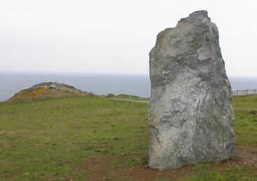
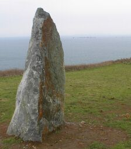

St. John - St Jean
First of the Millennium stones
St. John has become the first parish to have its Millennium standing stone erected. The 8ft high, seven-ton granite rock was installed at Sorel Point this morning by the Jersey Field Squadron, Royal Engineers Militia, who transported it from Ronez Quarry. They were watched by the Constable, Carl Hinault and Société Jersiaise president Philip Le Brocq, who had the idea of erecting a stone in every parish to mark the year 2000.
JEP 18/8/1999

